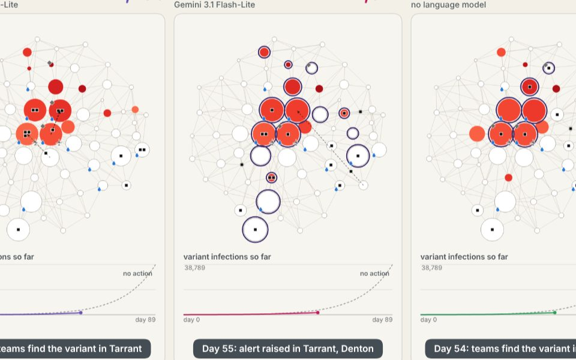

1Comparison lab
Same task, two organizations
Loading…
- waiting
- rescued
- lost
- fire
- drone
- order
- radio link
Details

County health departments against a new variant
- of the variant's infections averted by NatureSwarm
- 45% to 82%
- over the state coordinators
- +34.9 points
Details
A variant 1.8 times as transmissible as the resident strain spreads along commuting links around Dallas, in 16 to 1,024 counties, for 90 simulated days. Each county health department places its testing teams and raises local alerts; the state health department is the coordinator. Two smaller models ran both designs (CI of the lead: 22.4 to 50.3).